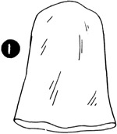
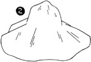
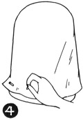
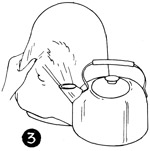
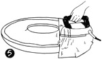

1952—How to Make Hats
by Ruby Carnahan
Materials Used to Make Felt Hats
FELT HOOD (ILLUS. 1)
A felt hood is shaped like an elongated crown and is used to block small hats and to make pattern hats.
FELT BODY (ILLUS. 2)
A felt body has a semi-shaped crown and a brim and is used when blocking a brimmed hat, and can be blocked on a block or used in a combination of blocking the crown and using a pattern for the brim.
FELT SKIRTING
Skirting is available in lengths and is also a fur felt, used for turbans and small draped hats. Usually requires a foundation.
WOOL FELT BY THE YARD
Wool felt by the yard is used for Berets and many casual stitched hats and bags. A foundation is often required.
FELTS
- Fur felt
- Velour
- Soleil
- Melusine
Are available in hoods and bodies. Hoods are used to make the smaller hats and the felt body is used when making a brimmed hat.
Fur felt is made from Belgian Hares, is the most satisfactory felt to work with, is soft and pliable, does not become stiff when steam and water is applied, and can be made over season after season. The initial cost is greater than wool felt, but the fact that it is so much more satisfactory to work with and can be used over, makes it the better buy. Wool felts are a cheaper felt and become very stiff when steam or water is applied, making it almost impossible to use wool felt more than one season.
STEAMING AND PRESSING FELTS
(Illus. 3) Felts require steam and heat to allow stretching and smoothing to fit block. Put felt on block, hold over steaming teakettle and as each spot of felt becomes hot and moist, pull, stretch and pin felt to block. (Illus. 4).
When stretching felt for brims or pattern cutting, lay a damp cloth over 'felt and press. When felt becomes hot and moist it is more pliable and can easily be stretched. (Illus. 5)
TO POLISH FELT WHEN FINISHED
Wet pressing cloth and wring dry. Roll cloth into a thick pad and place under hot iron. When pad is steaming hot, smooth it over felt surfaces with a circular motion. Continue heating pad and rubbing over felt until entire surface has been polished.